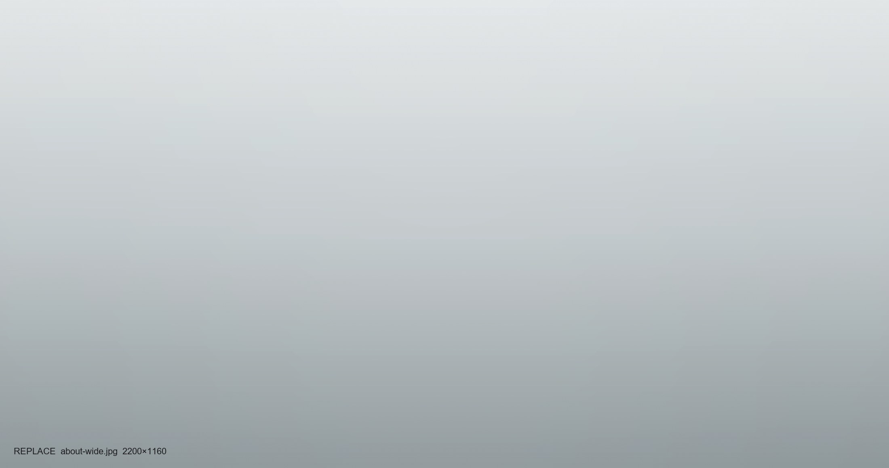

About
Two words I try
to earn: honestly.
Elena Marsh
I’m a travel and landscape photographer based in Lisbon, working mostly at the slow end of the medium — long stays, early mornings, and a small camera.
Aperture Assets is where that work lives. It began in 2019 as a way to store and share frames without the noise of social feeds, and it’s stayed deliberately quiet ever since — a clean wall to hang the pictures on, nothing more.
My one rule is in the name. I don’t composite skies, borrow light, or push a scene into something it wasn’t. If the morning was flat, the picture is flat. Captured honestly — or not at all.
How I Work
Three quiet rules.
Stay longer
I build trips around a single place and give it the time it deserves. Depth over distance, always.
Carry less
One body, a couple of primes, a notebook. Constraint sharpens the eye and keeps me present.
Leave it honest
Minimal edits, real light. The frame should match the memory of standing there.

Commissions & Enquiries
Let’s make something
honest together.
I take on a small number of editorial, tourism-board and brand commissions each year, and sell fine-art prints on request. Tell me where you’re thinking.
Based in Lisbon · Available worldwide · Replies within a week.